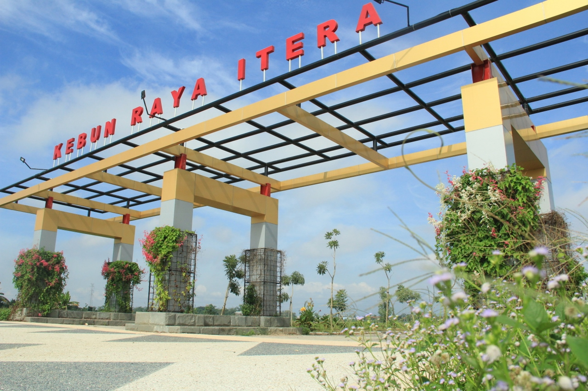

Informasi Umum
Kebun Raya Itera yang dikelola UPA Konservasi Flora Sumatera. Dalam pembangunannya, Kebun Raya Itera mengusung tema “Konservasi Tumbuhan Pamah Sumatera” yakni konservasi tumbuhan dataran rendah Sumatera yang menjadi ciri khas. Tercatat tanaman yang sudah dikonservasi untuk jenis non anggrek berjumlah 300 spesies dan jenis anggrek 34 spesies yang berasal dari Lampung, Indonesia bahkan luar negeri. Kampus Institut Teknologi Sumatera (ITERA) di Desa Way Hui, Kec. Jati Agung, Kab. Lampung Selatan Provinsi Lampung yang berdiri pada tahun 2014 berdasarkan Peraturan Presiden RI No. 124 tahun 2014 berada pada hamparan lahan seluas 285 ha. Sesuai Masterplan Kampus ITERA, direncanakan 60% dari lahan yang tersedia diperuntukkan sebagai Ruang Terbuka Hijau (RTH). Keinginan pembangunan Kebun Raya mengintegrasikan aktivitas kampus dengan konservasi lingkungan sebagai satu kesatuan ekosistem. Hasil kajian Tim Pusat Konservasi Tumbuhan Kebun Raya – BRIN juga menyimpulkan bahwa lokasi tapak layak dijadikan sebagai kebun raya. Kehadiran KR ITERA juga menjadikan Provinsi Lampung yang pertama di Sumatera yang memiliki dua kebun raya.